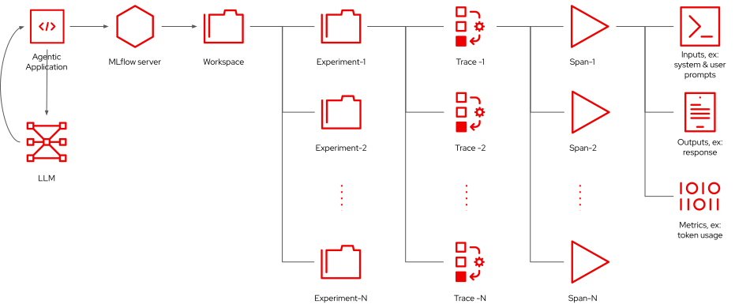
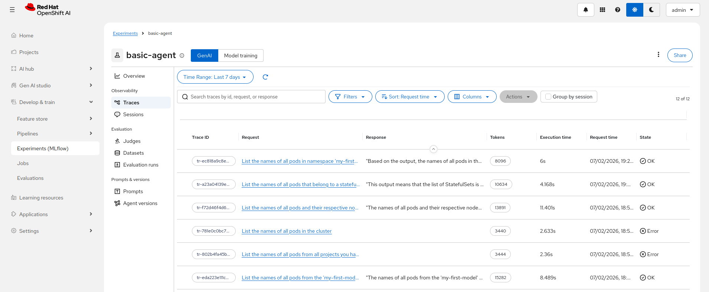
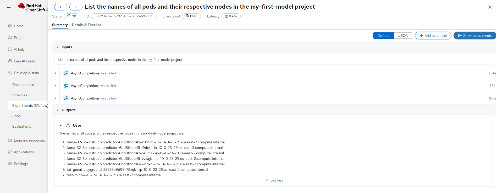
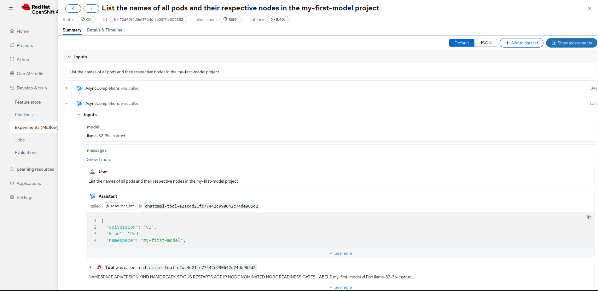

Tracing Agentic Applications
- Objective
-
Understand why tracing is essential for agentic applications and how MfFlow organizes trace data.
| Work In Progress |
Why developers need traces
If you provide exactly the same data to an LLM, in multiple attempts, each one returns a different response. Sometimes, it’s a small differente in wording. But sometimes it is a completely non-sense response, that is, an hallucination.
Developers working on agentic applications want to reach a compromise between the accuracy and the cost of running the agent. The accuracy is the number of good or correct answers compared to the number of bad or incorrect answers, by whatever criteria you define "good" and "bad".
You never reach 100% accuracy, but there are approaches to handle the innevitable bad answers, such as adding guardrails and evals before displaying the answer to an end user or before using the answer for the next task in an automated workflow.
The cost of running an agent depends mainly on the token usage, and again each attempt, even if taking exactly the same input data, may have a different cost. Larger models, reasoning models, and frontier models provide a higher accuracy at a higher cost per token and by spending a larger ammount of tokens per request.
So you must run your tests many times using the same input data. And you also must run tests using different input data: different kinds of requests which you expect that your agent should be able to answer or process.
As you attempt to optmize your agent (or just reach a good enough working state) you will also try variations on parameters such as system prompts, tool sets, and RAG sources. Maybe even try with different models.
In fact, collecting traces of an agent is the start of a process which requires post-processing of the data in such traces. RHOAI provides tools for such post-processing, for example the Eval Hub feature, which are not in scope for this course.
Trances and spans
MLflow traces are usefull for both interactive applications and autonomous agents. They collect all inputs and ouptus of each individual interaction between an application and a model, for example:
-
The model name
-
The system prompt
-
Model invocation parameters, such as temperature
-
The final response from the model
-
Error messages from the model and/or from the application, such as context exhaustion

Every time you run the application again (or submit a new prompt) it generates a new trace. If it is a conversational application, each subsequent prompt from the same conversation is added to the same trace, as a new span, until the conversation is terminated.
If your application makes use of RAG sources, it should include in the trace all data data returned by RAG, which is added to the context of the model, as additional inputs.
From a trace, it should be possible to reproduce the conversation, providing exaclty the same context, and compare the final and intermediate responses, in addition to metrics such as latency and token usage.
Traces and MCP servers
If it is an agentic application, the response from the model may request one or more tool calls. These tools are usually provided by one or more MCP servers. Agents are expected to provide a model with a list of all tools they are able to call, and that for each and every request!
The agent is reponsible for peforming all tool calls, collecting their ouputs, and adding these outputs to the next request submitted to the model, as part of the same conversation.
The model may decide to request yet additional tool calls, until it is satisfied it has collected all data it needs to provide a final response. It is like the agent and the model are having a conversation between themselves, without any participation from the end user.
An agent runs a loop, checking if the model requests another tool call, and only when the model signals its done the agent displays the final response (or takes whatever action it does from the final response).
As the agent runs its loop, its current trace grows with more spans. Each span records the current state of the context, including prompts, available tools, previous messages and previous responses.
| The label you see on your spans depend on the client framework and on the usage of autotrace or manual trace. So they may vary between applications and frameworks. Anyway, be ready to look at a lot of hierarchical data inside a trace. |
Viewing traces with the RHOAI dasboard
RHOAI displays traces for the selected project in the page.

Each trace gets an auto-assigned ID. Click either the ID or the user prompt (in the Request column) to view the spans inside that trace.

In the previous figure, each span is labeled AsyncCompletions because of the OpenAI extension for agents.
You can expand each individual span to show its input, outputs, and other data:

The previous example shows a span where the agent provides to the model data returned by a tool call, which was requested by the model during the previous span.
Because the context in a conversation with a model is cumulative, it is usually sufficient to check the latest span in a trace. Well, that for simple agents.
More sophisticated agents could orchestrate a complex workflow, which submits requests to different models, and control how much context to submit for each request. In such cases, as well as with conversational applications, you have the option of organizing related traces into sessions.
| This course only presents very simplistic sample applications, which are not convesational and do not delimit sessions. |
Tracing with the MLflow SDK
The simplest way of generating tracing from your agent, at least with the MLflow Python SDK, is to use its autologging feature.
For example, if you application uses OpenAI APIs:
mlflow.openai.autolog()If your agent runs as a pod inside OpenShift, its project is automatically taken as its MLflow workspace. But you can and should set the name of the current experiment, before you start logging traces.
mlflow.set_experiment("my-experiment")This course will not detail most of the tracing functions available in the MLflow SDK. If you must, you can have fine control of when you start a new span, how you label spans. Similarly, you can also control when you start and stop sessions and how you label sessions. You can also append additional parameters and metrics to each span.
It is also possible to use a generic logging framework, if it is configurable as an OpenTelemetry provider. These and other alternatives are detailed in the MLflow community documentation.